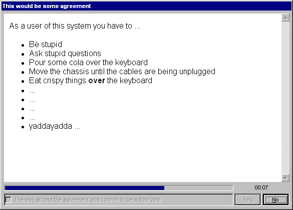
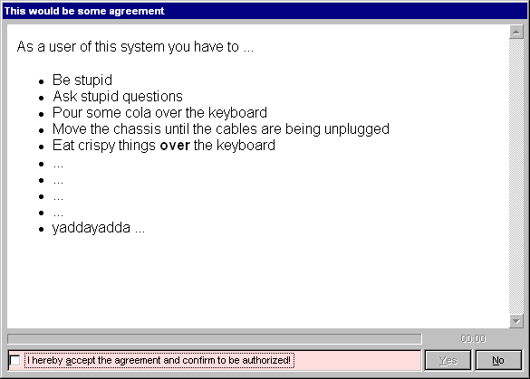

Please hover the mouse over the picture to see how it looks if the checkbox was checked!
The agreement dialog allows the maintainer of a machine to force the potential user
of a system to agree to a set of rules for usage of the system - or not being allowed
to logon otherwise.
There is no method to circumvent this, since the agreement is being shown before the
actual logon (e.g. "Loading your personal settings") takes place. Hence the user has
only the choice to agree or not.
The usage agreement is being shown directly after entering the username, password (and,
if necessary, the domain to logon to). And this is how it looks:
Please hover the mouse over
the picture to see how it looks if the checkbox was checked!
First of all, nothing special, there is no logging of the user actions, although
this would be easy to implement. The user is simply denied to logon and the GINA
invalidates the users logon token. Afterwards the logon dialog is being shown again
were another (or the same ;) user can enter his password.
In fact this dialog is just another instance between the loading of the users profile
and settings and entering the credentials. This step just decides whether the user is
allowed to proceed logon, no more no less.
Despite the shown behavior, there is the possibility to set a timeout with maximum 3600 seconds (i.e. 1 hour). The checkbox cannot be checked while the timeout period is not over:

The user can easily recognize
the time left to wait - see the "00:07"?
After the timeout period is over, the agreement shows the same behavior as was demonstrated in the very first picture:

Please hover the mouse over
the picture to see how it looks if the checkbox was checked!
Actually you can put anything the Internet Explorer of Windows would show. This GINA
actually uses the IE engine to render the content. Anyway, just this would be too open
when showing users any content. You should limit the links in the document shown to
the absolutely necessary! AgreementGINA2 already takes measures to not allow any protocols
but the internal about:blank, the also-internal res:// and the
http:// protocols. Downloads are not being allowed - imagine someone could
overwrite your system files while acting as SYSTEM - horrible! So all this is very
restrictive already, but the links in the agreement document decide whether the user is
given the chance to break "out of the box".
You can either give standard local pathes to HTML files, you can give remote URIs/URLs
(e.g. on the domain server) or you can directly enter HTML content. Note, that the
title of the document defines the title of the dialog!